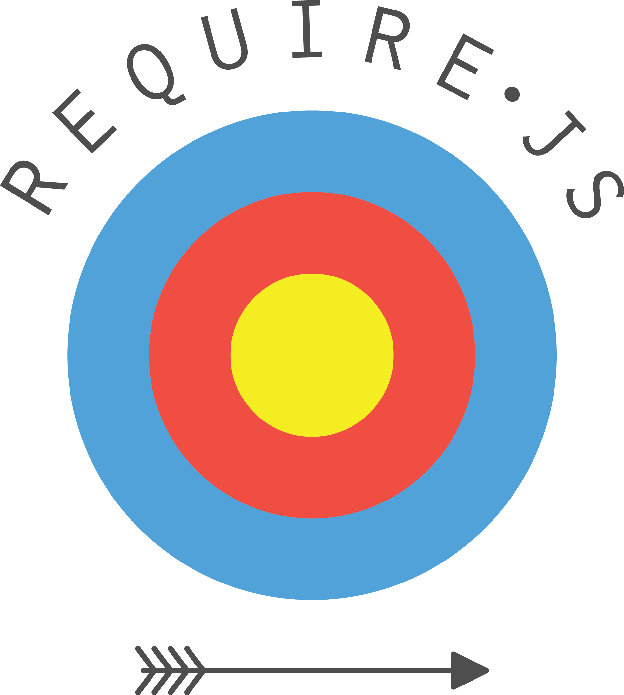

background-color: #00314c class: center, middle # JavaScript Buzzword Bingo ## A quick introduction to the JavaScript infrastructure we use in Bespin ??? Requires some audience participation Focus Team Members not allowed. Prize for most correct answers --- name: Tools class: center, middle # Tools --- class: center, middle name: NodeLogo  --- class: center, middle name: Node .left-column[ ] .right-column[ # NodeJS 1. JavaScript runtime 2. Command line 3. Event Driven, non-blocking IO 4. https://nodejs.org/ ] --- class: center, middle name: NPMLogo  --- class: center, middle name: NPM .left-column[ ] .right-column[ # NPM 1. 3rd party library manager 2. package.json file 3. Registry online/private 4. Can use versioning and mix deps 5. https://npmjs.com ] --- class: center, middle name: GruntLogo <img src="media/grunt-logo.svg" alt="Drawing" style="width: 50% !important;"/> --- class: center, middle name: Grunt .left-column[ ] .right-column[ # Grunt 1. Run tasks - compile, lint, etc. 2. Task libs from npm 3. JSON config in Gruntfile.js 4. Can group tasks 5. http://gruntjs.com/ ] --- class: center, middle name: BowerLogo <img src="media/bower-logo.png" alt="Logo" style="width: 50% !important;"/> --- class: center, middle name: Bower .left-column[ ] .right-column[ # Bower 1. Another library manager 2. Client-side code. 3. Registry or git URL 4. https://bower.io/ ] --- class: center, middle name: Libraries # Client-side Libraries --- class: center, middle name: jQueryLogo --- class: center, middle name: jQuery .left-column[ ] .right-column[ #jQuery 1. Everyone's staple 2. Ajax requests 3. DOM manipulation 4. http://jquery.com/ ] --- class: center, middle name: UnderscoreLogo # .white[_.] --- class: center, middle name: Underscore .left-column[ <img src="media/underscore-logo.png" alt="Logo" style="background-color:#fff;padding:10px;"/>] .right-column[ # .smaller[Underscore] 1. Programming helpers 2. Collections, Arrays, Objects, etc. 3. Functional programming 4. http://underscorejs.org ] --- class: center, middle name: BackboneLogo <img src="media/backbone-logo.png" alt="Logo" style="width: 50% !important;background-color:#fff;padding:40px"/> --- class: center, middle name: BackboneJS .left-column[ <img src="media/backbone-logo.svg" alt="Logo" style="background-color:#fff;padding:10px"/> ] .right-column[ # .smaller[BackboneJS] 1. MV* Framework 2. Unopinionated / flexible 3. Models/Collections/Views/Events/Router 4. http://backbonejs.org/ ] --- class: center, middle name: MarionetteLogo --- class: center, middle name: MarionetteJS .left-column[ ] .right-column[ # .smaller[MarionetteJS] 1. BackboneJS' Missing Views 2. Application architecture helpers. 3. Reduce memory leaks. 4. http://marionettejs.com/ ] --- class: center, middle name: HandlebarsLogo --- class: center, middle name: Handlebars .left-column[ ] .right-column[ #.smaller[Handlebars] 1. JavaScript Templating 2. HTML Escaping 3. More logic than Mustache 4. Extend with helpers 5. http://handlebarsjs.com/ ] --- class: center, middle name: MochaJSLogo <img src="media/mocha-logo.svg" alt="Logo" style="width: 50% !important;"/> --- class: center, middle name: MochaJS .left-column[ ] .right-column[ # MochaJS 1. Test framework 2. Browser or Node based 3. Nested test suites 4. Sync or Async tests 5. https://mochajs.org/ ] --- class: center, middle name: ChaiJSLogo <img src="media/chai-logo.png" alt="Logo" style="width: 50% !important;"/> --- class: center, middle name: ChaiJS .left-column[ ] .right-column[ # ChaiJS 1. Assertion library 2. TDD / BDD styles 3. Pairs with Mocha, etc. 4. Plugins for jQuery, etc. 5. http://chaijs.com/ ] --- class: center, middle name: SinonJSLogo <h1 class="sinon white">Sinon</h1> --- class: center, middle name: SinonJS .left-column[ <h1 class="sinon white">Sinon</h1>] .right-column[ #.smaller[Test Utils] 1. Spy on / Stub functions 2. Mocking 3. Fake Server for Ajax 4. http://sinonjs.org/ ] --- class: center, middle name: KarmaLogo --- class: center, middle name: .left-column[ ] .right-column[ #Karma 1. Test runner 2. Provides coverage reporting 3. Multiple browsers 4. http://karma-runner.github.io ] --- class: center, middle name: PhantomJSLogo --- class: center, middle name: PhantomJS .left-column[ ] .right-column[ # .smaller[PhantomJS] 1. Headless browser 2. Webkit support 3. Scriptable 4. http://phantomjs.org ] --- class: center, middle name: JSHintLogo  --- class: center, middle name: JSHint .left-column[ ] .right-column[ #.smaller[Code linter] 1. Enforce standards 2. Less fussy than JSLint 3. Works in editors too. 4. http://jshint.com ] --- class: center, middle name: RequireJSLogo  --- class: center, middle name: RequireJS .left-column[ ] .right-column[ # .smaller[RequireJS] 1. Asynchronous Module Definition 2. Module Loader 3. Optimise for production 4. Handles split packages 5. Multiple per-page 6. http://requirejs.org ] --- class: center, middle name: SassLogo <img src="media/sass-lang.svg" alt="Logo" style="width: 50% !important;"/> --- class: center, middle name: SASS .left-column[ ] .right-column[ # SASS 1. Extension of CSS 2. Variables, nesting, mixins 3. Large ecosystem 4. http://sass-lang.com/ ] --- class: center, middle name: ExpressLogo <h1 class="express white">Express</h1> --- class: center, middle name: Express .left-column[ <h1 class="express white">Express</h1> ] .right-column[ # .smaller[Server] 1. NodeJS Based 2. Minimal framework 3. Pluggable middleware 4. http://expressjs.com ] --- class: center, middle name: ChromeLogo --- class: center, middle name: Chrome .left-column[ ] .right-column[ # Chrome 1. Developer Tools 2. Developer Tools 3. Developer Tools 4. https://www.google.com/chrome/ ] --- class: center, middle # Thank you ##### Built with [Slides in Markdown](https://github.com/technopagan/slides-in-markdown)